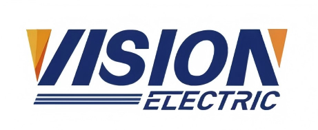

Your Global GEN-PARTS Partner
Payment Methods – Vision Generator Parts
Reliable power, trusted parts. Choose the payment method that suits you best.
Energía confiable, repuestos de confianza. Elige el método de pago que mejor se adapte a ti.
Method
Método |
Buyer Risk
Riesgo comprador |
Fees
Comisiones |
Speed
Tiempo |
Card Support
Soporte tarjeta |
Platform Guarantee
Garantía plataforma |
| Alibaba (Trade Assurance) |
Very Low
Muy bajo |
Low
Bajo |
Fast
Rápido |
✅ (Visa, MasterCard, etc.) |
✅ |
| T/T Bank Transfer |
Medium
Medio |
Low
Bajo |
1–3 working days
1–3 días hábiles |
❌ |
❌ |
| Alipay |
Low
Bajo |
Low
Bajo |
Instant
Instantáneo |
✅ |
✅ (vía plataforma) |
| WeChat Pay |
Low
Bajo |
Low
Bajo |
Instant
Instantáneo |
✅ |
✅ (vía plataforma) |
| Western Union |
Medium
Medio |
Medium
Medio |
Fast
Rápido |
❌ |
❌ |
Zoe’s Recommendation | Recomendación de Zoe:
For new customers, Alibaba Trade Assurance offers platform protection and supports cards like Visa/MasterCard.
Para nuevos clientes, Alibaba Trade Assurance ofrece protección de plataforma y acepta tarjetas como Visa o MasterCard.
For repeat large-volume orders, T/T bank transfer is fast and cost-effective.
Para pedidos grandes y frecuentes, la transferencia bancaria T/T es rápida y económica.
Details | Detalles:
- T/T Bank Transfer: You’ll need a bank account that supports international wire transfers. We provide full invoice and account details. Transfer time is typically 1–3 working days.
Transferencia T/T: Se necesita una cuenta bancaria que admita transferencias internacionales. Proporcionamos factura y datos completos. Suele tardar 1–3 días hábiles.
- Alibaba Trade Assurance: Requires an Alibaba account. Supports Visa, MasterCard, Apple Pay, and other cards. Very secure for both sides.
Alibaba Trade Assurance: Requiere cuenta de Alibaba. Acepta Visa, MasterCard, Apple Pay, etc. Muy seguro para ambas partes.
- Alipay & WeChat Pay: Recommended for Chinese-speaking buyers or those with access. Instant confirmation and no international fee issues.
Alipay & WeChat Pay: Recomendado para compradores que hablen chino o tengan acceso. Confirmación instantánea y sin problemas de tarifas internacionales.
- Western Union: Suitable for small urgent payments. Usually processed quickly, but without platform guarantee.
Western Union: Apto para pagos pequeños y urgentes. Procesamiento rápido, pero sin garantía de plataforma.